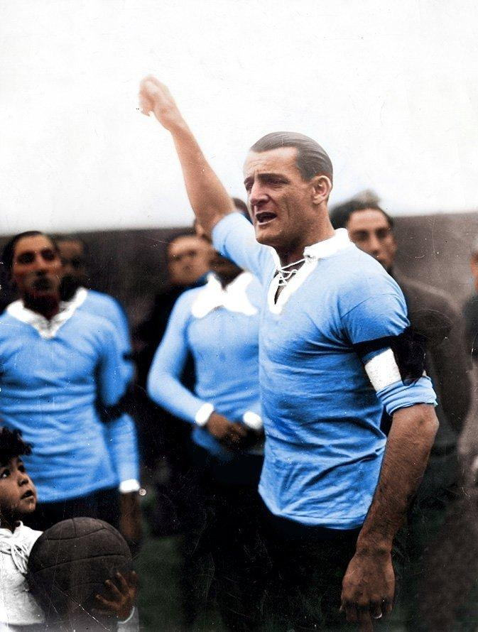
José Nasazzi
Debuted at Lito. Captain of Uruguay.
Chapter I
We were born on 24 July 1917 in a café in Arroyo Seco. We disappeared, we came back, and we are writing what comes next.
1917
In a café in Arroyo Seco, named after the man behind the counter.
The name came from behind the counter. Manuel Semino was «Lito» to the whole neighbourhood, and his café, at Agraciada and Santa Fe, was where Arroyo Seco met. When the regulars decided to found a club on 24 July 1917, they gave it the café's name.
The first shirt was electric blue with red trim and white shorts, with the crest over the left breast. That is where the nickname comes from: the blue and red of Arroyo Seco. Today's shirt follows the same line: French blue, red collar and red trim on the sleeves.
A club is born of a neighbourhood before it is born of a document. Lito never moved: the same grid of streets that led to the café leads to the pitch today.
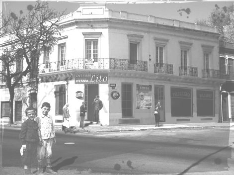
The café at Agraciada and Santa Fe. The name came from that counter.
Minute No. 1
At ten at night on 24 July 1917, chaired ad hoc by Juan Pérez (son), the assembly unanimously approved the founding of «a centre for sporting and recreational purposes». The club's minute book opens with that page.
Founding minute. Original held in the club archive.
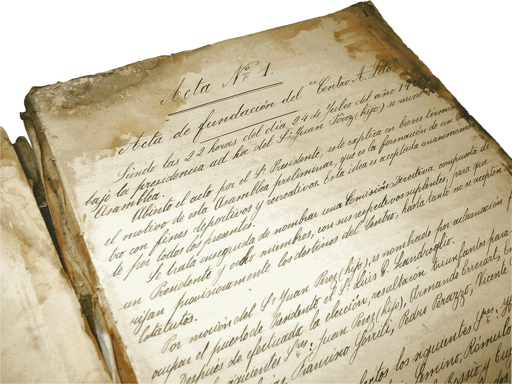
1921
Eight seasons in the top flight of Uruguayan football and three world champions who came through here.
Affiliated to the AUF, Lito won the Divisional Extra in 1919 and the Intermedia in 1920. Two promotions in a row put the club in the 1921 Uruguayan Championship, where it stayed until 1928. Its best seasons were 1922 and 1923: fifth place, among the big clubs.
When football turned professional in 1932, the club stayed amateur and played in the lower divisions until it vanished from official competition around 1947. From 1952 it played again in the Uruguayan Amateur Football Federation, driven by Vicente Cappuccio's sons: two titles and two runners-up finishes. It stopped competing in 1960. Then, silence.
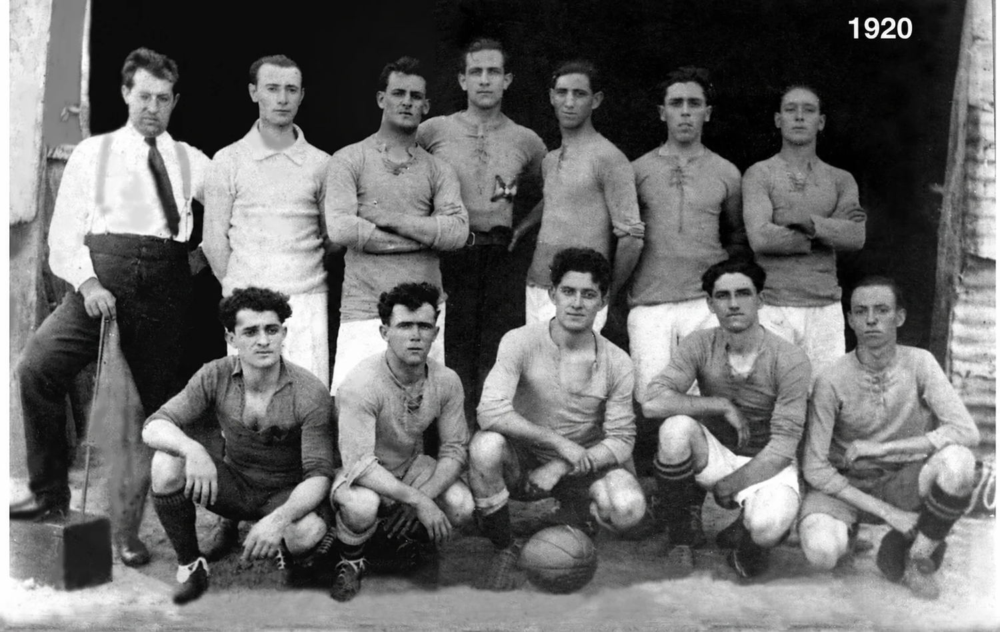
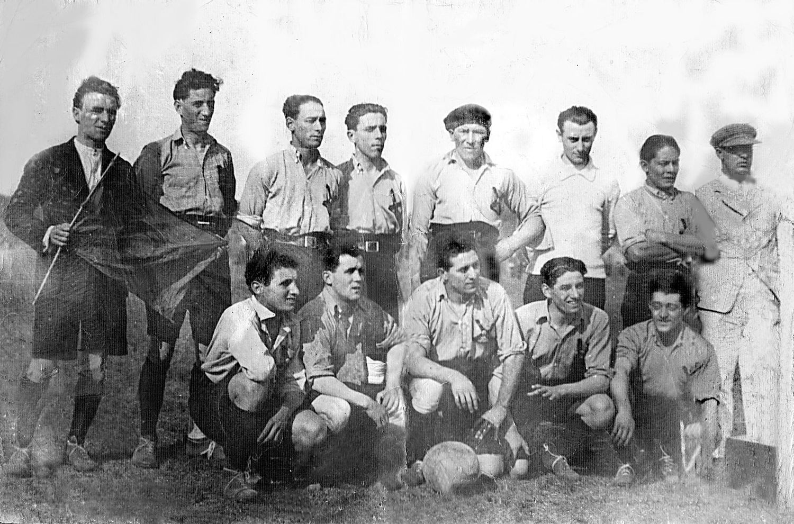
From Lito to the world
Three players who wore this shirt went on to lift the cup with Uruguay.

Debuted at Lito. Captain of Uruguay.
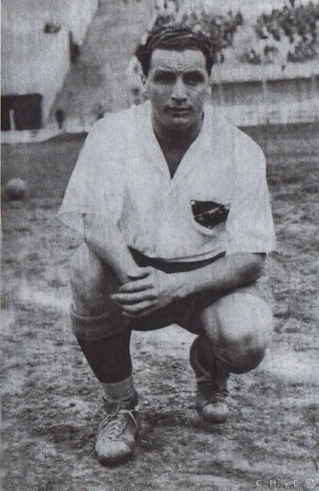
Debuted at Lito.
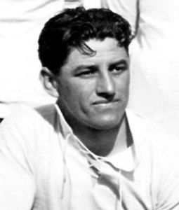
Played for Lito.
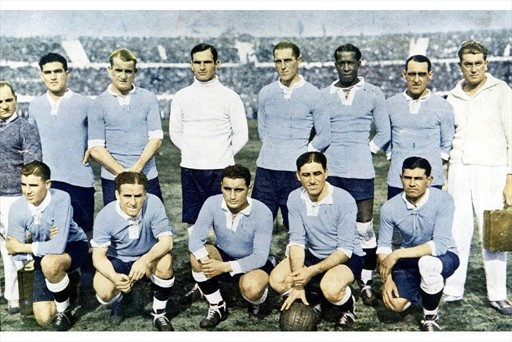
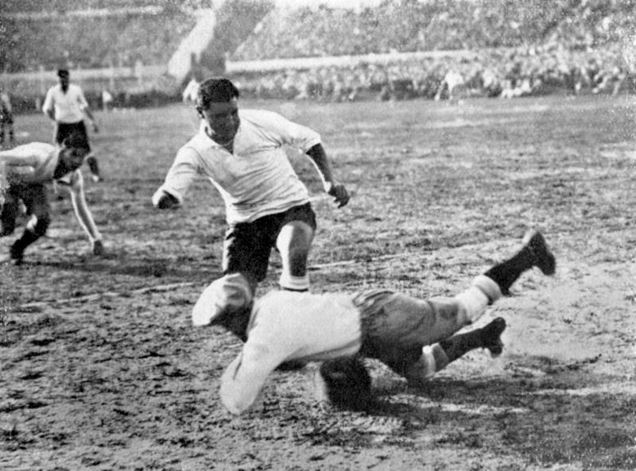
The split
During the schism in Uruguayan football, Lito was one of three clubs that entered two teams in the parallel competitions. The only way to tell them apart was the crest on the shirt. Of the two, the one that survives today is the round one.

The AUF side. This is the crest the club still uses today.
vs.
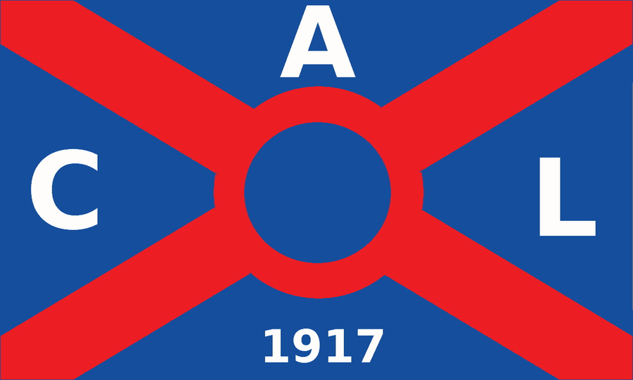
The Federation side. A crest with right angles.
Archive
Honours
Plus two titles and two runners-up finishes in the Federation, between 1952 and 1960.
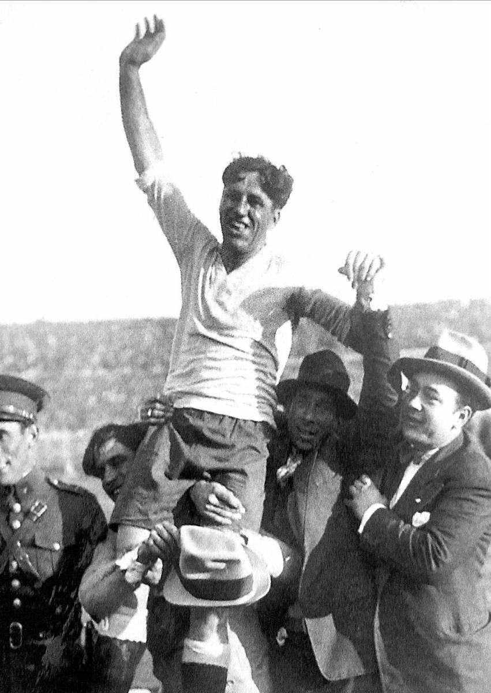
2022
Seventy-five years after the last official match.
75 years later
Lito is back.
Today
Primera Divisional C, a first team and youth sides working all year round. The pitch, the stand and Sunday belong to the neighbourhood again.
In numbers
2026
A ground of its own in Arroyo Seco and a club that wants to grow without ceasing to belong to the neighbourhood.
What is coming
On the ground the club uses today there is a plan for a pitch, stands and sports facilities for the neighbourhood. It is drawn, not built: Chapter VI shows it in full.
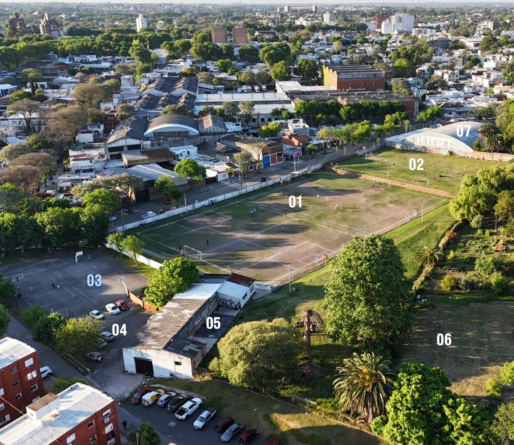
Home and ground
Kit
The official home kit: French blue shirt with a red collar and red trim on the sleeves, and white shorts with red trim on the hem.
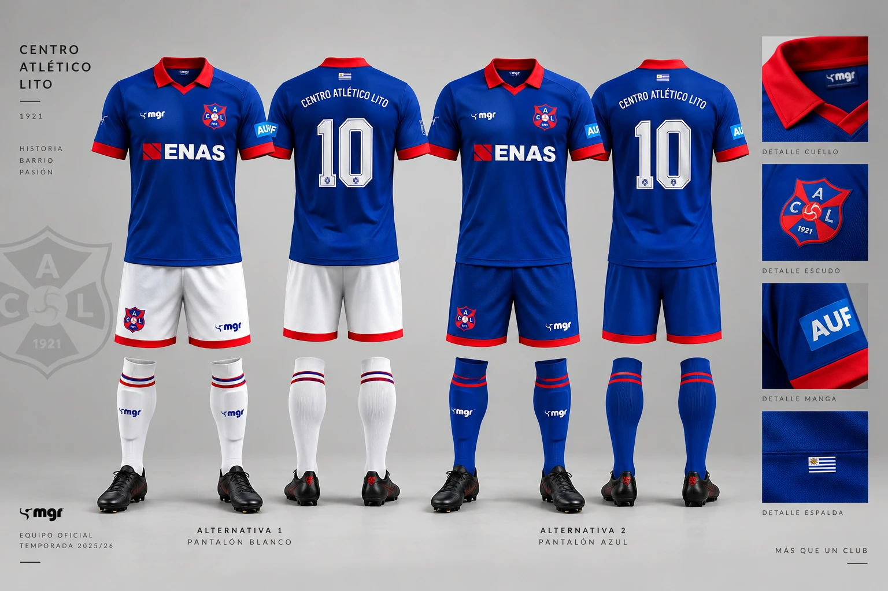
French blue · red trim on collar and sleeves
White · red trim on the hem
The official one · away and goalkeeper kits to be confirmed
Institutional
The board is renewed at the members' assembly. Load the current list and the date of the last assembly.
Identity
A shield quartered in red and blue, with the club's initials, the ball at the centre and the founding year at the foot. The blue and the red come from the first shirt, the one from 1917.
Brand use and vector files: marca@calito.uy
Official anthem
Lito querido,
cuadro invencible,
fuerte, aguerrido e irresistible.
Siempre Centro Lito adelante,
triunfante, triunfante,
porque tiene garra y corazón,
campeón, campeón.
Que proclaman tus parciales,
que son inmortales,
tu gloria y honor.
Centro Atlético Lito · Montevideo · 1917
La historia ya está escrita.
El próximo capítulo, no.
Centro Atlético Lito1917 — Montevideo
I · El club · Centro Atlético Lito